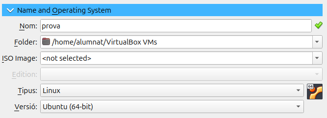
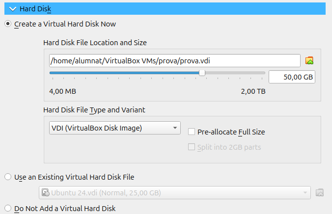
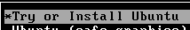
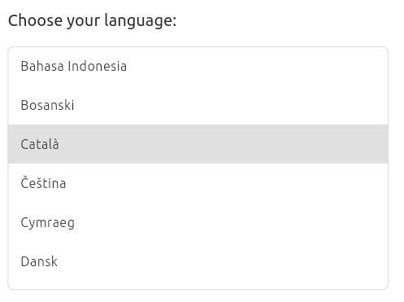
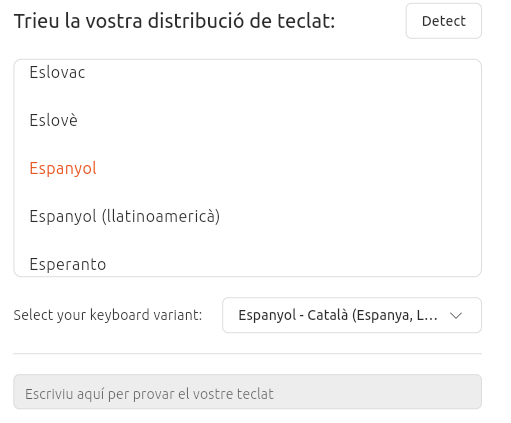
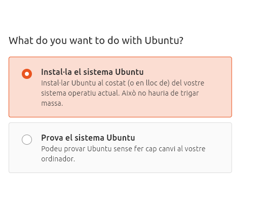

Sprint 1
Instal·lació SO Ubuntu 24
Aqui posarem el nom, el tipus de SO i la versió que volem.

Posem la memòria que creiem necesaria.

Podem ampliar la capacitat de la nostra màquina si volem.

Una vegada dintre fiquem la ISO de ubuntu desktop 24.

Cliquem a instal·lar ubuntu.

Seguidament triarem les opcions personals que més ens agradi o s'ajustin a nosaltres.


Instal·lem el sistema d'ubuntu.

Volem que sigui una instal·lació interactiva.

Desisió personal (recomano la predeterminada).

Ara per a fer les particions que volem cliquem a alguna altra cosa.

Ara creem una nova partició.

Li donem la memoria que volem tindre perque esta sera una partició swap, que es la particio per a tindre un extra de RAM per a la instalació.

Per a la partició Home li posarem l'espai per les nostres homes o usuaris varia segons el que volem.

I per acabar amb les particions la root que li donarem la memoria restan.
Aqui es pot observar com quedara.

Comprovem que ho tenim tot en ordre.

I ja tendries la teva màquina d'ubuntu 24 Desktop amb particions fetes!!

Configuració xarxa
per a començar la nostra màquina tindra Xarxa NAT.

Si activem el DHCP no haurem de canviar res.

I si volem manual haurem de posar la configuració de xarxa.

Per a comprobar que s'ha canviat fem ip a i mirem la ip que sigui la correcta.


I ara per canviar-ho manualment entrarem al netplan.

El canviarem per a que quedi així.

Farem un netplan apply per a guardar.

Farem ping per a comprovar que tot funcioni.


Punts de restauració
Instal·lem el timeshift


Ara que ja tenim el timeshift instal·lat clicarem a fer la instantània al botò de crear.


GRUB
Mirem que tenim grub

Eliminem la grub

Mirem que no tenim grub

Anirem a parametres

En l'apartat de emmagatzematje

Obrim des de una nova ISO


Entrem a la màquina


Iniciarem la reparació recomanada.

Una vegada reparada ja podriem tancar la maquina i tornar a obrir-la.


Obrim la màquina normal

I al entrar a la carpeta boot podem veure que s'ha creat la grub.
La tornem a borrar
Tornem a posar desde parametres l'altra ISO de recuperació de GRUB.

Al obrir ens mostrara aquesta pantalla, seleccionarem Arranque manual.

Anem a Sistemas Operativos

Seleccionem Linux

Ara tanquem la maquina i tornem a obrir treient la ISO I deixant l'apartat d'emmagatzematje buit.
Al entrar entrarem al directori boot.

Posarem les comandes per tornar a instal·lar la GRUB.

Fem una update a la GRUB per acaba de recuperar-la.

Ara fem un ls i ja la tindrem.

Instalació virtual d'aplicacións